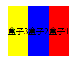

语法：
box-direction:取值
说明：
box-direction属性定义盒子的顺序
| 属性值 | 说明 |
|---|---|
| normal | 正向显示（默认值） |
| reverse | 反向显示 |
使用方法：
box-direction:reverse; /*盒子模型子元素反向显示*/
兼容性：
- 浅绿 = 支持
- 红色 = 不支持
- 粉色 = 部分支持
| 支持版本\类型 | IE | Firefox | Safari | Chrome | Opera |
|---|---|---|---|---|---|
| 较早版本 | 6.0-11.0 | 4.0.-25.0 -moz- | 5.1.7 -webkit- | 4.0-31.0 -webkit- | 9.5-14.0 |
| 较新版本 | 15.0-18.0 -webkit- |
橘色说明要加浏览器的前缀
事例：
反向显示
body{
display:-moz-box;
-moz-box-orient:horizontal; /*定义盒子元素内的元素从左到右流动显示*/
-moz-box-direction:reverse; /*定义盒子元素内的元素反向显示*/
}
div{height:100px;line-height:100px;}
#box1{background:red;}
#box2{background:blue;}
#box3{background:yellow;}
